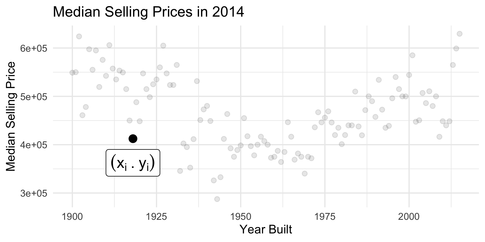
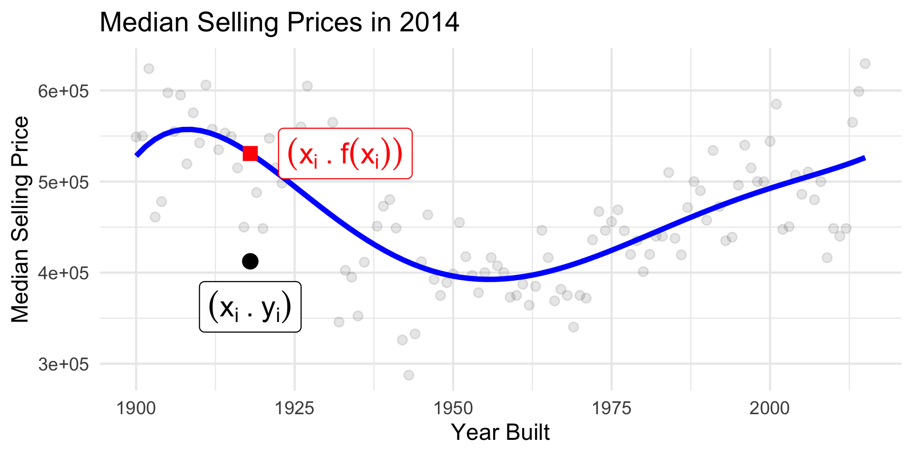

PSTAT 100: Lecture 13
Examples of Statistical Modeling
Department of Statistics and Applied Probability; UCSB
Summer Session A, 2025
\[ \newcommand\R{\mathbb{R}} \newcommand{\N}{\mathbb{N}} \newcommand{\E}{\mathbb{E}} \newcommand{\Prob}{\mathbb{P}} \newcommand{\F}{\mathcal{F}} \newcommand{\1}{1\!\!1} \newcommand{\comp}[1]{#1^{\complement}} \newcommand{\Var}{\mathrm{Var}} \newcommand{\SD}{\mathrm{SD}} \newcommand{\vect}[1]{\vec{\boldsymbol{#1}}} \newcommand{\Cov}{\mathrm{Cov}} \DeclareMathOperator*{\argmin}{\mathrm{arg} \ \min} \]
Recap
We can think of a model as a mathematical or idealized representation of a system.
In statistical modeling, we adopt a three-step procedure:
- Propose a model
- Fit the model to the data
- Assess how well we believe our model is performing.
There are two main types of statistical models: parametric and nonparametric.
- The model fitting step differs between these types of models.
Today, let’s explore two examples of modeling: one nonparametric, and one parametric.
Nonparametric Modeling: An Example
Density Estimation
Density Estimation
Framework
Data: A collection of numerical values; \(\vect{x} = (x_1, \cdots, x_n)\) we believe to be a realization of an i.i.d. random sample \(\vect{X} = (X_1, \cdots, X_n)\) taken from a distribution with density f().
Goal: to estimate the true value of f() at each point.
Density Estimation
Histograms
- Believe it or not, a histogram is actually a nonparametric attempt at modeling precisely this situation!
Important
There are actually two kinds of histograms: frequency histograms and density histograms.
- Frequency histograms are the ones we talked about in Week 1.
- Density histograms take frequency histograms and rescale the y-axis so that the total area under the histogram is 1.
- Essentially, our “guess” for the value of the density at a given point xi is simply the height of the density histogram at that point.
Histograms, Revisited
If we let Bj denote the jth bin, and if we have n observations, the height of the jth bar on a density histogram is given by \[ \mathrm{height}_j = \frac{1}{nh} \sum_{i=1}^{n} 1 \! \! 1_{\{x_i \in B_j\}} \]
Recall that the sum of indicators is a succinct way of writing “the number of observations that satisfy a condition”.
- In this way, you should be able to interpret what the equation above is saying.
- Perhaps an example may help:
Histograms, Revisited
Histograms, Revisited
- Given a new observation x, we can think of our “best guess” at the value of f(x) to be the height of the density histogram at x:
\[ \widehat{f}(x) = \frac{1}{nh} \sum_{i=1}^{n} \sum_{j} 1 \! \! 1_{\{x \in B_j\}} 1 \! \! 1_{\{x_i \in B_j\}} \]
In other words, our estimate takes the input x, finds the bin to which x belongs, and returns the height of that bin.
We call this procedure fixed binning, since, for a given x, we simply identify which, out of a set of fixed bins, x belongs to.
This leads us to the idea of local binning, in which we allow the height at x to be a normalization of the count in a neighborhood of x of width h (as opposed to the count in one of a set of fixed bins).
Histograms, Revisited
Local Binning
\[ \widehat{f}_{\mathrm{lb}}(x) = \frac{1}{nh} \sum_{i=1}^{n} 1 \! \! 1_{\{ \left| x_i - x \right| < \frac{h}{2} \}} \]
Histograms, Revisited
Local Binning
Histograms, Revisited
Local Binning
\[ \widehat{f}_{\mathrm{lb}}(x) = \frac{1}{n} \sum_{i=1}^{n} \left[ \frac{1}{h} 1 \! \! 1_{\{ \left| x_i - x \right| < \frac{h}{2} \}} \right] \]
- Changing xi amounts to changing the “center” of the “box”
- Changing h amounts to changing the width and height of the “box”
- Note, however, that for any value of h and xi, the area underneath this graph is always 1.
- Nonnegative function that integrates to one…
Leadup
\[ \widehat{f}_{\mathrm{KDE}}(x) = \frac{1}{n} \sum_{i=1}^{n} \frac{1}{\lambda} K_{\lambda}(x, x_i) \]
- In this context, the function K(x, xi) is referred to as a kernel function, provided it is nonnegative and integrates to unity: \[ \int_{-\infty}^{\infty} K_{\lambda}(x, x_i) \ \mathrm{d}x = 1, \ \forall x_i \]
- Some people relax the condition of integrating to unity, but we’ll include it.
- So, again, what kinds of functions does this sound like?
Kernel Density Estimation
In general, we can use any valid probability density function as a kernel.
The estimate defined on the previous slide is called a kernel density estimate (KDE), and the general procedure of estimating a density as a weighted local average (with weights given by a kernel) of counts is called kernel density estimation.
Gaussian KDE utilizes a Gaussian kernel:
\[ \widehat{f}_{\mathrm{GKDE}}(x) = \frac{1}{n} \sum_{i=1}^{n} \frac{1}{\lambda} \phi\left( \frac{x_i - x}{\lambda} \right) \]
- Other kernels include the boxcar (equivalent to a locally binned histogram!), triangular, Epanechnikov (quadratic), Biweight (quartic), and a few others
Kernel Density Estimation
Kernels

Parametric Modeling: An Introduction
Parametric Modeling
Recall that, in the parametric setting of modeling, we express our model in terms of a series of estimable parameters.
For example, suppose we assume the weight Yi of a randomly-selected cat to follow a Normal distribution with mean µ and variance 1, independently across observations.
Yi \(\stackrel{\mathrm{i.i.d.}}{\sim}\) N (µ, 1)
Yi = µ + εi, for εi \(\stackrel{\mathrm{i.i.d.}}{\sim}\) N (0, 1)
- Fitting a model to our data is therefore equivalent to finding the “optimal” estimates for the parameters in our model (in this case, µ).
The Modeling Process
More About Step 2
This is precisely what is meant by Step 2 of the modeling procedure (sometimes called the model fitting stage): we identify estimators/estimates of the parameters that are ideal in some way.
In our coin tossing example, our choice of estimation was relatively straightforward: use the sample proportion as an estimator for the population proportion.
In many cases, however, there won’t necessarily be one obvious choice for parameter estimates.
- For example, in our cat-weight example: do we use the sample mean or the sample median?
- To estimate spread, should we use the mean or the median? Standard deviation or IQR?
Loss Functions
In general, we can think of an estimator as a rule.
- Mathematically, rules are functions - so, an estimator based on a single random observation Y can be expressed as δ(Y)
A loss function is a mathematical quantification of the consequence paid in estimating a parameter θ by an estimator δ(Y).
- More concretely, a loss function is a function \(\mathcal{L}: \R^2 \to \R^{+}\), where \(\mathcal{L}(\theta, \delta(Y))\) represents how poorly \(\delta(Y)\) is doing at estimating \(\theta\).
The risk is the average loss: \(\mathbb{E}_{Y}[\mathcal{L}(\theta, \delta(Y))]\).
An “optimal” estimator for θ is therefore one that minimizes the risk: \[ \widehat{\theta} := \argmin_{\theta} \left\{ \mathbb{E}_{Y}[\mathcal{L}(\theta, \delta(Y))] \right\} \]
Loss Functions
Illustration
As an illustration of this framework of estimation, let’s attempt to find the value c that “best” summarizes a set of observations (y1, …, yn).
As the distribution of Y is, in general, unknown, we can consider the empirical risk in place of the risk: \[ R(\theta) := \frac{1}{n} \sum_{i=1}^{n} \mathcal{L}(y_i, c) \]
- Here, \(\mathcal{L}(y_i, c)\) can be interpreted as “how far away c is from yi”.
Again, our “best” summary will be the value of c that minimizes R(θ)
Loss Functions
There are many choices for loss functions, each with pros and cons.
For numerical data, the two most common loss functions are:
Squared Error (aka L2)
\(\mathcal{L}(y_i, \theta) = (y_i - \theta)^2\)

Absolute Error (aka L1)
\(\mathcal{L}(y_i, \theta) = |y_i - \theta|\)
Loss Functions
L1 loss tends to be more robust to outliers than L2 loss.
- Keep in mind that, depending on the context, this could be a good or bad thing.
- In general, it is up to you (the modeler) to decide which loss function to adopt.
As an example of how loss functions help us construct estimators for parameters, let us consider the case of L2 loss.
Given data (y1, …, yn), our “optimal” (risk-minimizing) estimate for θ (under L2 loss) satisfies \[ \widehat{\theta}_n := \argmin_{\theta} \left\{ \frac{1}{n} \sum_{i=1}^{n} (y_i - \theta)^2 \right\} \]
Loss Functions
Example: L2-minimizing Estimate
- To optimize a function, we differentiate and set equal to zero:
\[\begin{align*} \frac{\partial}{\partial \theta} R(\theta) & = \frac{\partial}{\partial \theta} \left[ \frac{1}{n} \sum_{i=1}^{n} (y_i - \theta)^2 \right] \\ & = \frac{2}{n} \sum_{i=1}^{n} (\theta - y_i) = \frac{2}{n} \left[ n \theta - n \overline{y}_n \right] = 2(\theta - \overline{y}_n) \\ \implies 2(\widehat{\theta} - \overline{y}_n) & = 0 \ \implies \ \boxed{\widehat{\theta} = \overline{y}_n} \end{align*}\]
- So, the sample mean minimizes the risk under L2 loss; i.e. if we adopt L2 loss, then the value of θ that best fits the data is the sample mean.
Chalkboard Example
Chalkboard Example
Identify the summary statistic that minimizes the empirical risk under L1 loss.
Modeling with Two Variables
Two Variables
Both of our examples up until now can be classified as “univariate” modeling, as they involve only one variable.
In data science, we are often interested in how two (or more) variables are related to one another.
As an example, it’s not difficult to surmise that houses built in different years sell for different prices.
As such, we can explore a dataset that tracks the median selling price of homes built in various years, as sold in King County (Washington State) between May 2014 and May 2015.
- E.g. one datapoint represents the median selling price of a home built in 1963, sold in 2014.
- Data Source, though we’re using a version that I aggregated and cleaned.
Housing Data
An Example
Housing Data
An Example
- Thinking back to the first week of this class:
- Is there a trend?
- If so, is the trend linear or nonlinear?
- Can the trend be classified as positive or negative?
- Additionally, can anyone propose an explanation for the “dip” in prices near the middle of the graph?
Housing Data
Building a Model
Housing Data
Building a Model
Housing Data
Building a Model
Housing Data
Building a Model
Housing Data
Building a Model
In other words: for every year xi we believe there is an associated “true” median selling price f(xi).
This true price is unobserved; what we actually observe is a median selling price yi that has been contaminated by some noise εi.
- This noise could be due any number of factors: measurement error, random fluctuations in the market, etc.
- We’ll talk about this noise process more in a bit.
Mathematically: \(y_i = f(x_i) + \varepsilon_i\), for some zero-mean constant-variance random variable εi.
- It is precisely this error term that makes our model stochastic.
Statistical Models
Terminology
y = f ( x ) + noise
y: response variable
- Dependent variable
- Outcome
- Output
f: signal function
- Mean function
x: explanatory variable
- Independent variable
- Feature
- Input
- Covariate
- If
yis numerical, the model is called a regression model; ifyis categorical, the model is called a classification model.
Statistical Models
Noise
The
noiseterm can be thought of as a catch-all for any uncertainty present in our model.Broadly speaking, uncertainty can be classified as either epistemic (aka “reducible”) or aleatoric (aka “irreducible”).
Epistemic uncertainty stems from a lack of knowledge about the world; with additional information, it could be reduced.
Aleatoric uncertainty, on the other hand, stems from randomness inherent in the world; no amount of additional information can reduce it.
Statistical Models
Noise
As an example: errors arising from a misspecified model are epistemic, as, in theory, if the model were corrected, they would be eliminated.
On the other hand, measurement error is widely accepted as aleatoric; repeated measurements will not reduce the amount of measurement error.
Since the
noiseterm in our model captures the uncertainty present, we treat it as a zero-mean random variable.Later, we’ll need to add some additional specificity to this (e.g. what distribution does it follow? What assumptions do we need to make about its variance?) - for now, we’ll leave things fairly general.
Why Model?
Prediction
- What’s the true (de-noised) median selling price of a house built in 1918?
Inference
- How confident are we in our guess about the relationship between year built and selling price?
Next Time
- Tomorrow, we’ll start our discussion on a specific type of parametric model that lends itself nicely to analysis (called the SLR model).
- Our discussion on the SLR model will last several lectures.
- REMINDER: Homework 2 is due This Sunday (July 20) by 11:59pm on Gradescope.

PSTAT 100 - Data Science: Concepts and Analysis, Summer 2025 with Ethan P. Marzban